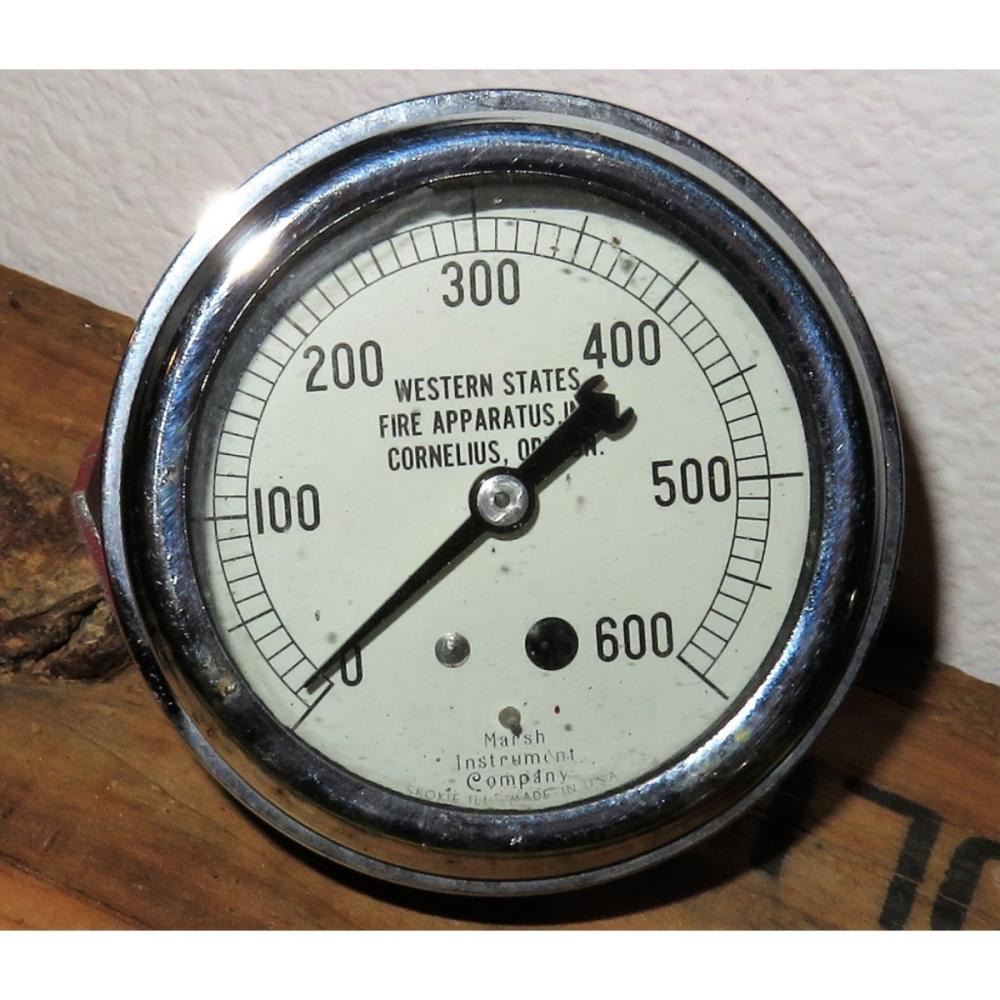
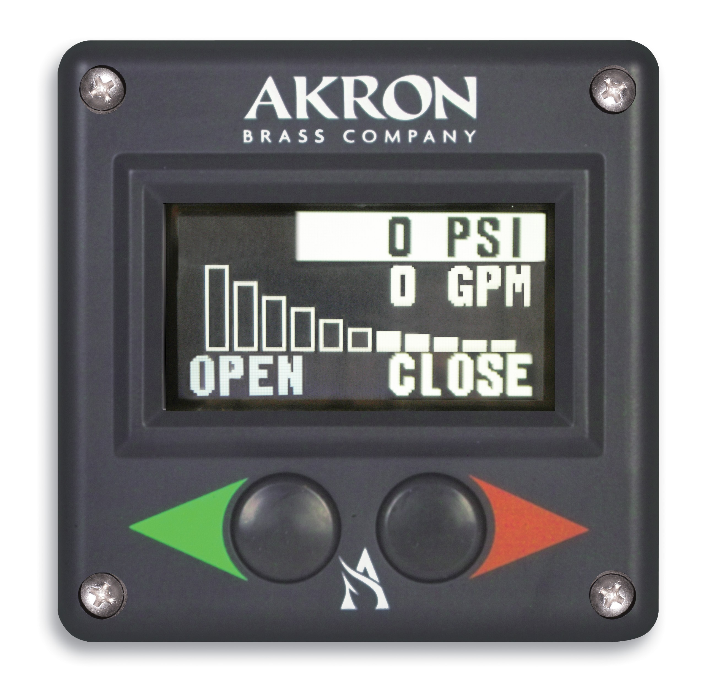

Introduction
Working with formulas
Calculating flow through a smooth bore nozzle and friction loss often seems like the most intimidating part of the 1002 class, when in reality it can be easy with a couple of tricks and some practice. In these next few pages we'll look at problem-solving strategies and give you plenty of practice in using the formulas in the 1002 book. Math, like any other skill such as ice skating or playing a banjo, gets easier the more you practice it.
In the next few pages we'll look at the two specific formulas used in 1002 class. But first, you're probably asking. "Why do I need to learn this? Can't I just keep cranking the pressure up until they tell me to stop? Or just use a close approximation of pressure loss per shot of hose?"
On the fireground, that's exactly what some operators do. Unfortunately it causes a world of problems - the guys at the end of the nozzle get beat up if there's too much pressure coming down the line, and you may start losing flow through the nozzle, causing the guys trying to fight the fire to get less than the amount of water they need.
Pressure is the amount of force water exerts. Imagine a fire pump outlet with no hose on it - if you stood in front of it you'd feel the pressure of the water leaving the pump through that outlet pushing you away from the pump. In reality, water pressure pushes in all directions - that's why a water balloon inflates in all directions instead of just the direction the water is coming out of the faucet. This "pressure in all directions" doesn't only push water down the hose line - it also pushes against the inside of the hose. The more pressure you put the water under, the harder it pushes against the hose, and this pushing actually causes friction inside the hose. When too much friction builds up you actually start losing pressure. This is known as friction loss, and it reduces the amount of water flowing through a hose.
Volume, on the other hand, refers to the amount of water you are trying to mose out of a pump, down a particular hoseline, or out the end of a nozzle. You'll sometimes hear volume referred to as flow; we use those terms pretty much interchangeably when performing theoretical calculations.
It may be helpful to think of flow as the cargo we're carrying (for instance, 100 gallons of water) and pressure as the way we get it to where we want it to go. More pressure does not equal more volume, and many a new engineer has made this mistake. By knowing how theoretical calculations work you can avoid this potential pitfall.